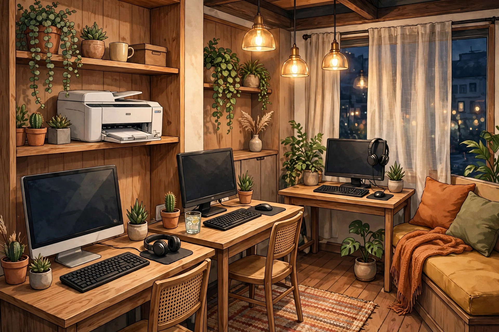

সাইবার ক্যাফে দোকান সাজানোর সম্পূর্ণ গাইড

সাইবার ক্যাফে বা অনলাইন সেবা কেন্দ্র খুলতে চান? শুধু একটা কম্পিউটার আর প্রিন্টার কিনলেই হবে না — দোকানটা ঠিকভাবে সাজানো থাকলে কাস্টমার নিজে থেকেই আসবে। নিচে ধাপে ধাপে পুরো গাইড দিলাম।
📍 ১. জায়গা বাছাই — সবচেয়ে গুরুত্বপূর্ণ
- ভিড় এলাকা বেছে নিন: বাজার, স্কুল-কলেজের কাছে, পঞ্চায়েত/বিডিও অফিসের আশেপাশে।
- দোকানের সামনে বাইক/সাইকেল রাখার জায়গা থাকা জরুরি।
- ভাড়া নেওয়ার আগে এলাকায় আর কটা দোকান আছে দেখে নিন — বেশি প্রতিযোগিতা থাকলে অন্য পাড়া ভাবুন।
🖥️ ২. জরুরি যন্ত্রপাতি
যা যা লাগবেই:
- কম্পিউটার/ল্যাপটপ — ভালো স্পিডের, ফর্ম ফিলাপে আটকাবে না এমন
- প্রিন্টার — কালার + ব্ল্যাক, দুটোই থাকলে ভালো
- স্ক্যানার — ডকুমেন্ট স্ক্যানের জন্য
- ল্যামিনেশন মেশিন — আধার, ভোটার কার্ড ল্যামিনেটে চাহিদা প্রচুর
- ফটো প্রিন্টার — পাসপোর্ট সাইজ ছবির জন্য আলাদা আয়
- জেরক্স মেশিন — বেশি ভলিউম হলে আলাদা মেশিন লাভজনক
🪑 ৩. ভেতরের সাজসজ্জা
- কাস্টমারদের বসার জায়গা রাখুন — দাঁড়িয়ে অপেক্ষা করতে কেউ পছন্দ করে না।
- কাউন্টার পরিষ্কার ও গোছানো রাখুন। তার-টার ছড়িয়ে থাকলে খারাপ দেখায়।
- পর্যাপ্ত আলো ও ফ্যান — গরমে কাস্টমার পালিয়ে যাবে।
- দেয়ালে পরিষেবার তালিকা ও দামের চার্ট টাঙিয়ে দিন — স্বচ্ছতায় বিশ্বাস বাড়ে।
🪧 ৪. সাইনবোর্ড — দোকানের মুখ
- বড়, পরিষ্কার অক্ষরের সাইনবোর্ড লাগান — দূর থেকে পড়া যায় এমন।
- বোর্ডে মূল পরিষেবাগুলো লিখুন: ফর্ম ফিলাপ • প্রিন্ট/জেরক্স • পাসপোর্ট ফটো • অনলাইন আবেদন
- রাতে দেখা যায় এমন লাইটিং থাকলে সন্ধ্যায়ও কাস্টমার আসবে।
⚡ ৫. ইন্টারনেট ও বিদ্যুৎ ব্যাকআপ
- ভালো স্পিডের ব্রডব্যান্ড নিন — মোবাইল হটস্পটে বড় ফাইল আপলোডে সমস্যা হয়।
- ইনভার্টার/UPS রাখুন — লোডশেডিংয়ে দোকান বন্ধ থাকলে কাস্টমার অন্য দোকানে চলে যাবে।
💰 ৬. খরচের মাথা (সাধারণ ধারণা)
খরচ এলাকা ও যন্ত্রের মান অনুযায়ী বদলায়, তবে এই খাতগুলো মাথায় রাখুন:
- দোকান ভাড়া + অগ্রিম
- কম্পিউটার, প্রিন্টার, স্ক্যানার, ল্যামিনেশন মেশিন
- সাইনবোর্ড ও ইন্টেরিয়র
- মাসিক: ইন্টারনেট বিল, বিদ্যুৎ, কাগজ-কালি, ভাড়া
⚠️ পরামর্শ: শুরুতেই সবচেয়ে দামি যন্ত্র কিনবেন না। কাজ বাড়লে ধাপে ধাপে আপগ্রেড করুন। আমাদের ওয়েবসাইটের ফ্রি টুলস (পাসপোর্ট ফটো মেকার, PDF টুলস) ব্যবহার করলে অনেক সফটওয়্যার খরচ বাঁচবে!
🔗 আরও আপডেট পেতে যুক্ত থাকুন
🌐 ওয়েবসাইট: আরও নতুন নতুন তথ্যের জন্য আমাদের ওয়েবসাইট ভিজিট করুন: https://aicombo90.github.io/dafadar-online-seva/ — ওয়েবসাইটটা মোবাইলে সেভ/বুকমার্ক করে রাখুন যাতে হারিয়ে না যায়! পরের বার এলে নতুন তথ্য দেখতে পাবেন।
💬 WhatsApp গ্রুপ: সরকারি প্রকল্প ও চাকরির তাজা আপডেট সবার আগে পেতে আমাদের WhatsApp গ্রুপে যোগ দিন: গ্রুপে যোগ দিন
📺 YouTube: ভিডিওতে দেখতে চান? আমাদের YouTube চ্যানেল সাবস্ক্রাইব করুন: Dafadar Online Seva